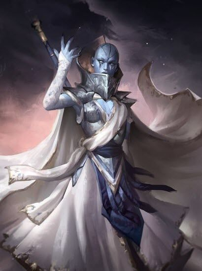

 An archivist of the Vedalken and former worker of the embassy. She tries to be logical and stoic most of the times even though sometimes her emotions and natural curiosity breaks through. Even while with the group she tries to stick to her principles and follows the orders of the Artificers, something that puts her at odds with the group. She has her doubts about the truth about the world and the nature of the Artificers but still reveres them as part of the divine purpose. She uses her power to find and invoke the symmetrical patterns of the universe in order to aid her allies and hinder her enemies, while drawing power from the shapes of reality.
Powers
1) Teachings of the great symmetry
"We gaze upon the beauty of creation, each fiber of its being beating to the Towers divine design. The
worlds strings are woven with intent, and as the Tower rises above the realms, so shall our minds rise
over the confines of senses, to seek a whole."
Such were the lessons taught to a tadpole Anura, at the Assembly.
There she was introduced to the varied subjects of arcane and divine. Teachings of the symmetry were the centerpiece of her,
and every vedalkens primary education. Anura showed aptitude to the teachings, and her purpose led her to the
College, where she honed both her devotion and her craft.
This power is delving into the very fabric of creation, manipulating the weave of reality,
to extract paradoxes in controlled bursts. These paradoxes are extremely unstable and this alternated reality is but a flicker in the whole.
With madtery came complex shapes, and with those shapes, came more powerful paradoxes.
Age: 29;? Height: 1.87m; Weight: 89kg. Str: 11 Dex: 14 Con: 18 Int: 20 Wis: 14 Cha: 12